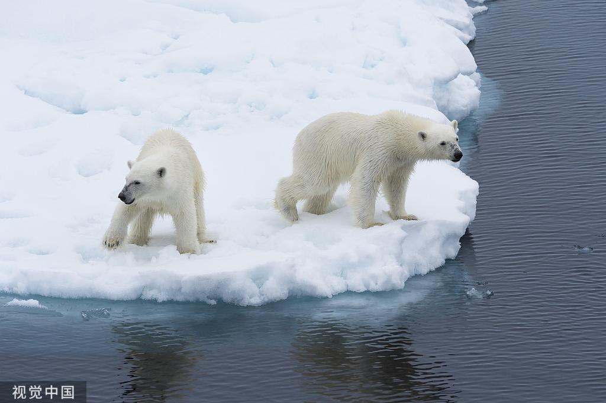
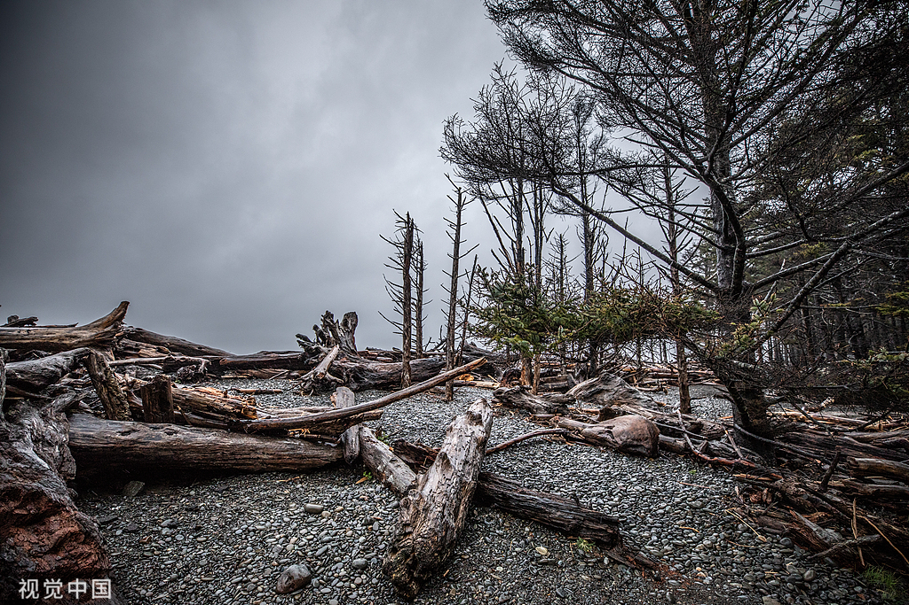
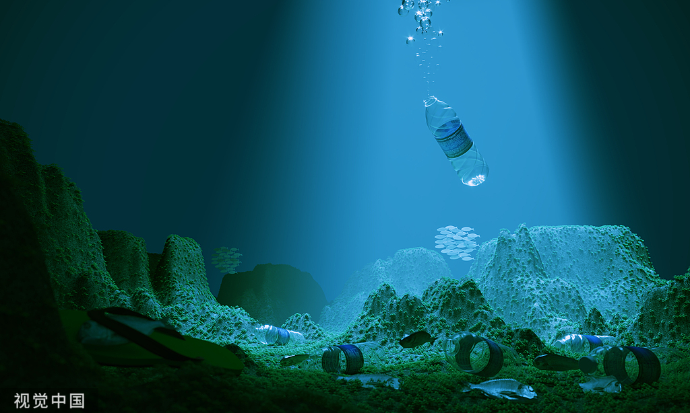

在21世纪的今天，我们面临着一个不容忽视的全球性问题——环境破坏。从工业化的兴起到现代文明的快速发展，人类活动对自然环境的影响日益加剧。全球变暖、森林消失、海洋污染、生物多样性的丧失，这些环境问题如同地球的伤痕，时刻提醒着我们环境破坏的严重性。
全球变暖是环境破坏最显著的标志之一。由于温室气体的大量排放，地球的平均气温正在上升，导致极端气候事件频发，海平面上升，冰川融化。这不仅威胁着人类的生存，也对无数野生动植物的生存环境造成了毁灭性的打击。
森林砍伐则是另一个严峻的问题。森林被誉为“地球之肺”，它们吸收二氧化碳，释放氧气，维持着地球的碳氧平衡。然而，由于非法伐木和农业扩张，全球森林面积正在以惊人的速度减少，这不仅加剧了全球变暖，也破坏了无数物种的栖息地。
海洋污染同样不容忽视。塑料垃圾、工业废水、化肥农药的流入，使得海洋生态系统遭受严重破坏。海洋生物因误食塑料而死亡，珊瑚礁因水温升高而白化，这些现象都在警示我们海洋环境的脆弱性。
